ماذا ستفعلون؟
- تكتبون الأرقام التي أعطاها لكم Teachable Machine.
- تطلبون من Excel أن يحسب مدى جودة الذكاء الاصطناعي الذي دربتموه.
- ترسمون 5 رسوم بيانية: دائري، أعمدة، خطي، مبعثر (XY) وفقاعي (XYZ).
- تشرحون ما تقوله الرسوم عن الذكاء الاصطناعي.
قبل أن تبدأوا
- نزّلوا ملف البداية بلغتكم ثم افتحوه في Excel. إذا ظهرت رسالة «العرض المحمي» فاضغطوا تمكين التحرير.
- الأرقام: استخدموا نتائجكم أنتم، أو الأرقام النموذجية الموجودة في الجزء 0.
- قد تكون واجهة Excel عندكم بالعربية أو العبرية أو الإنجليزية. أسماء القوائم تختلف لكن الأزرار والأيقونات متشابهة — وفي نهاية الدليل قائمة كلمات بثلاث لغات.
- أسماء الدوال في الصيغ تُكتب دائمًا بالإنجليزية (SUM وIF وغيرها). إذا ظهر خطأ مع الفاصلة
,فجرّبوا الفاصلة المنقوطة;بدلًا منها.
0احصلوا على أرقامكم
في Teachable Machine اختبروا صورة واحدة في كل مرة، واكتبوا النسب المئوية الثلاث التي تظهر (تفاح، موز، برتقال). تحتاجون إلى 12 صورة من المرحلة 3: من apple_01 إلى apple_04 ومن banana_01 إلى banana_04 ومن orange_01 إلى orange_04.
لم يعد النموذج موجودًا أو لا يوجد وقت؟ استخدموا هذه الأرقام النموذجية:
| الصورة | تفاح | موز | برتقال |
|---|---|---|---|
| apple_01 | 97 | 2 | 1 |
| apple_02 | 91 | 4 | 5 |
| apple_03 | 99 | 0 | 1 |
| apple_04 | 84 | 3 | 13 |
| banana_01 | 3 | 94 | 3 |
| banana_02 | 6 | 88 | 6 |
| banana_03 | 12 | 41 | 47 |
| banana_04 | 4 | 95 | 1 |
| orange_01 | 5 | 2 | 93 |
| orange_02 | 38 | 9 | 53 |
| orange_03 | 61 | 5 | 34 |
| orange_04 | 7 | 3 | 90 |
1تعرّفوا على نافذة Excel
انظروا إلى الصورة وطابقوا الأرقام مع القائمة أسفلها. لكل خلية عنوان يتكوّن من حرف العمود ورقم الصف، مثل C2.
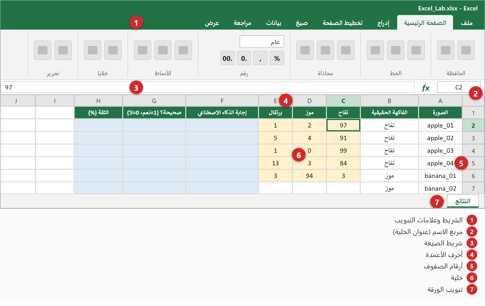
2اكتبوا أرقامكم
- افتحوا ملف البداية. الخلايا الصفراء هي التي تكتبون فيها الأرقام.
- اضغطوا على الخلية C2 واكتبوا نسبة التفاح للصورة apple_01، ثم اضغطوا Tab واكتبوا نسبة الموز، ثم Tab واكتبوا نسبة البرتقال، ثم اضغطوا Enter.
- تابعوا حتى تكملوا الصفوف الـ12 كلها (36 رقمًا).
- اكتبوا الرقم فقط — بدون علامة %.
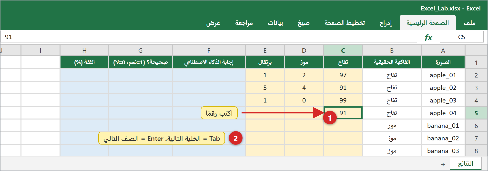
3دعوا Excel يجد إجابة الذكاء الاصطناعي
الخلايا الزرقاء هي التي تكتبون فيها صيغًا. تبدأ كل صيغة بعلامة =.
اضغطوا على أي صيغة لنسخها
- اضغطوا على الخلية F2.
- اكتبوا الصيغة التالية (اضغطوا عليها لنسخها):
=INDEX($C$1:$E$1,MATCH(MAX(C2:E2),C2:E2,0)) - اضغطوا Enter. سيعرض Excel الفاكهة ذات أكبر نسبة.
- في الخلية G2 اكتبوا
=IF(B2=F2,1,0)— تعطي 1 إذا أصاب الذكاء الاصطناعي و0 إذا أخطأ. - في الخلية H2 اكتبوا
=MAX(C2:E2)— هذه هي ثقة الذكاء الاصطناعي. - حدّدوا F2:H2 ثم اسحبوا المربع الصغير في الزاوية (مقبض التعبئة) للأسفل حتى الصف 13. ينسخ Excel الصيغ ويغيّر أرقام الصفوف تلقائيًا.
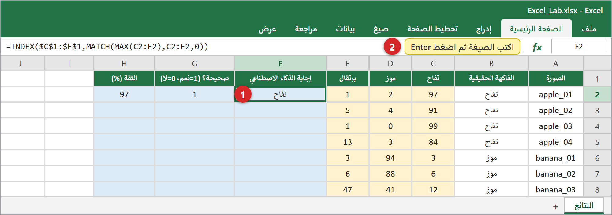
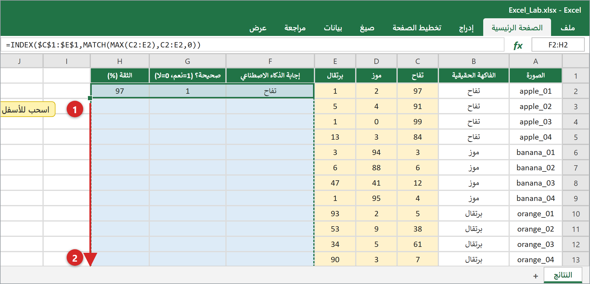
4العدّ والمتوسط والنسبة المئوية
اكتبوا هذه الصيغ في الخلايا الزرقاء في العمود K:
| الخلية | الصيغة | ماذا تخبركم |
|---|---|---|
| K2 | =COUNT(G2:G13) | كم عدد الصور |
| K3 | =SUM(G2:G13) | كم إجابة كانت صحيحة |
| K4 | =K2-K3 | كم إجابة كانت خاطئة |
| K5 | =K3/K2 | الدقة = الصحيحة ÷ الكل |
| K6 | =AVERAGE(H2:H13) | متوسط الثقة |
| K7 | =MIN(H2:H13) | أقل ثقة |
| K10 | =AVERAGEIF($B$2:$B$13,J10,$G$2:$G$13) | دقة التفاح — ثم انسخوها للأسفل حتى K12 |
| K15 | =K5 | دقة المرحلة 3 — ثم اكتبوا في K16:K18 دقتكم في المراحل الأخرى (مثلًا 60%) |
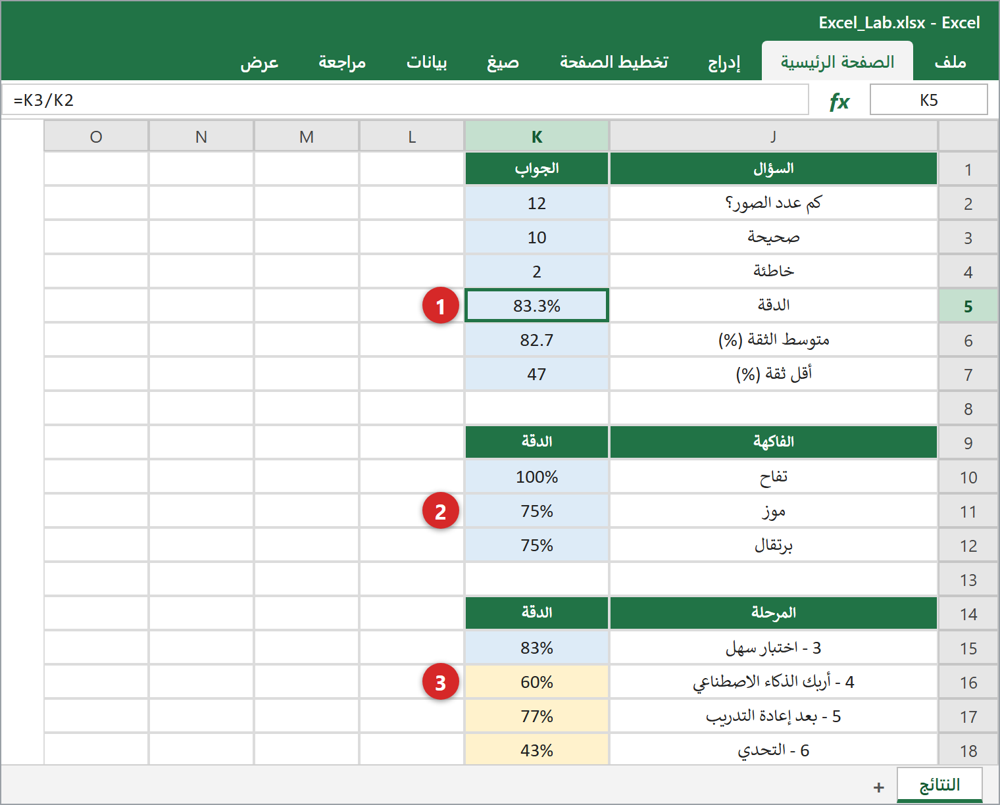
تظهر الدقة في K5 على شكل 0.8333. اضغطوا على الخلية K5 ثم على تبويب الصفحة الرئيسية ثم على زر % (نمط النسبة المئوية). افعلوا الشيء نفسه لـ K10:K12 وK15:K18.
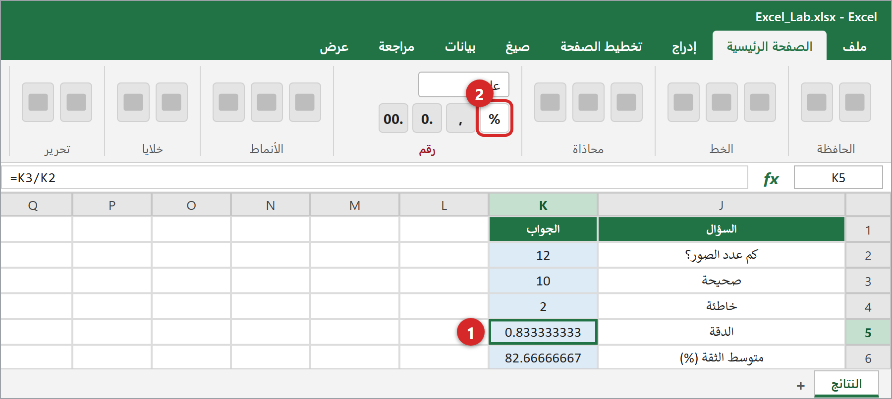
5ارسموا رسومكم البيانية
الطريقة دائمًا نفسها: ① حدّدوا الخلايا بالسحب بالفأرة. ② افتحوا تبويب إدراج واضغطوا على أيقونة مخطط في مجموعة المخططات. ③ يرسم Excel المخطط — حرّكوه وغيّروا حجمه بالفأرة.
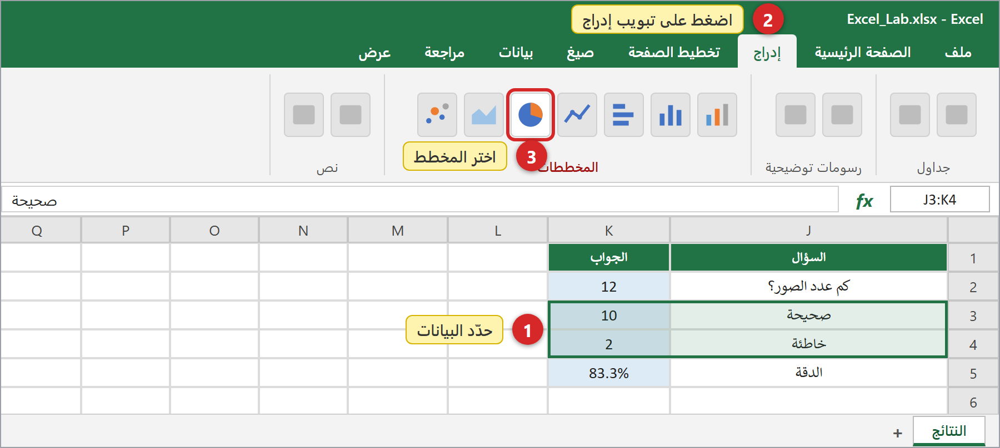
5.1 — مخطط دائري — الصحيح مقابل الخاطئ
- حدّدوا J3:K4
- إدراج ← مخطط دائري ← دائري ثنائي الأبعاد
يُظهر أي جزء من إجابات الذكاء الاصطناعي كان صحيحًا.
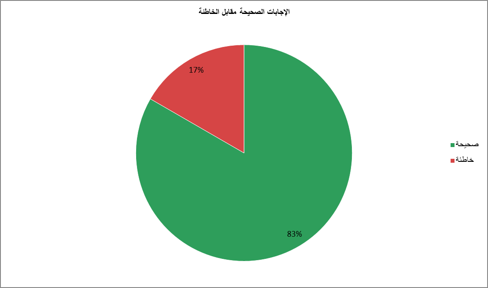
5.2 — مخطط عمودي — الدقة لكل فاكهة
- حدّدوا J9:K12 (مع صف العنوان)
- إدراج ← مخطط عمودي ← أول نوع في القائمة (الأعمدة المتجمعة)
يُظهر أي فاكهة يعرفها الذكاء الاصطناعي أفضل.
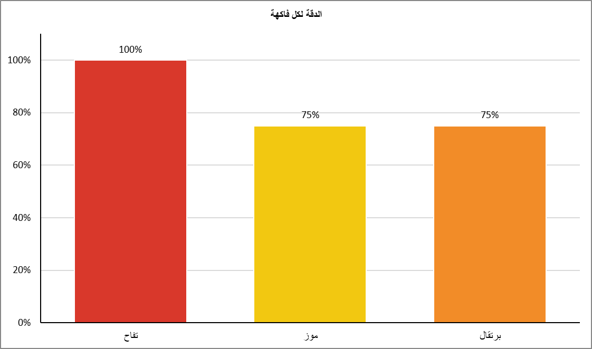
5.3 — مخطط خطي — الدقة عبر المراحل
- حدّدوا J14:K18
- إدراج ← مخطط خطي ← النوع الذي عليه نقاط على الخط
يُظهر هل تحسّن الذكاء الاصطناعي بعد إعادة التدريب.
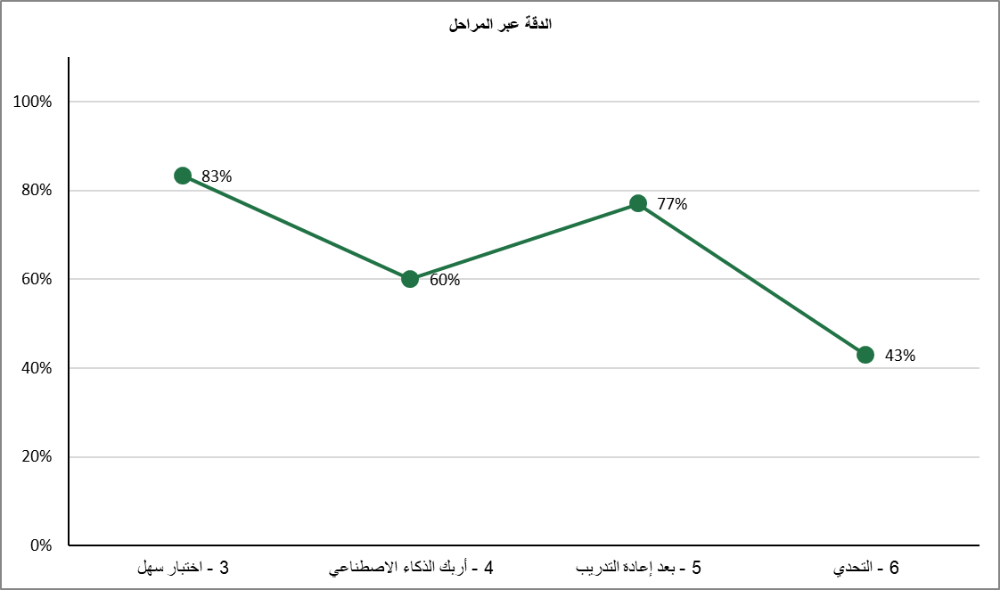
5.4 — مخطط مبعثر (XY) — التفاح مقابل الموز
- حدّدوا C1:D13
- إدراج ← مخطط مبعثر (X, Y) أو فقاعي ← أول نوع (نقاط فقط)
المحور الأفقي X = نسبة التفاح، والمحور العمودي Y = نسبة الموز. كل نقطة هي صورة واحدة. كما في الصورة، تقع التفاحات في الأسفل جهة اليمين والموزات في الأعلى جهة اليسار، وتبقى البرتقالات قرب الزاوية (0,0) لأن النسبتين منخفضتان. ابحثوا عن النقطتين اللتين ابتعدتا عن مجموعتيهما — هاتان هما الخطآن. أما النقاط في المنتصف فهي صور لا يكون الذكاء الاصطناعي متأكدًا منها.
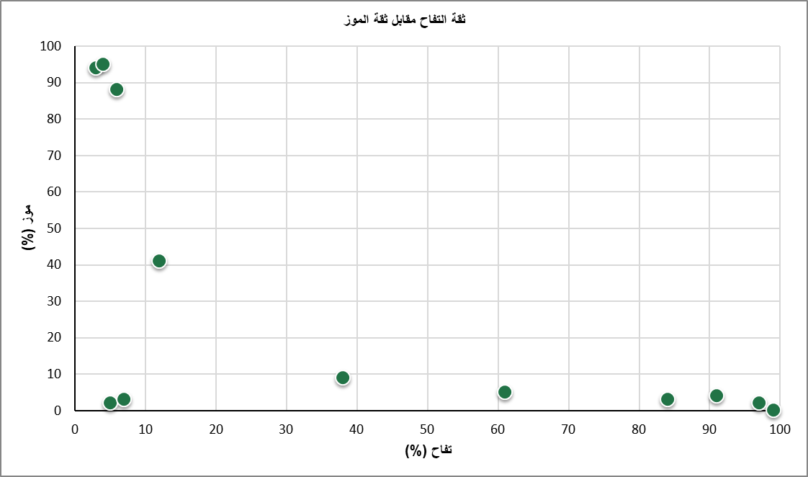
5.5 — مخطط فقاعي (XYZ) — ثلاثة أرقام في رسم واحدللخبراء
- حدّدوا C2:E13 — هذه المرة بدون صف العنوان (المخطط الفقاعي يحتاج إلى أرقام فقط)
- إدراج ← مخطط مبعثر (X, Y) أو فقاعي ← فقاعي
X = نسبة التفاح، وY = نسبة الموز، وحجم الفقاعة Z = نسبة البرتقال. الفقاعات الكبيرة قرب الزاوية السفلية اليسرى هي صور «برتقالية» جدًا.
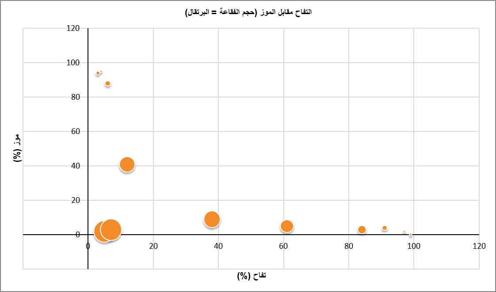
6اجعلوا الرسوم واضحة
- اضغطوا على المخطط ليظهر إطاره.
- اضغطوا على زر + (عناصر المخطط) بجانبه وضعوا علامة على: عنوان المخطط، عناوين المحاور، تسميات البيانات.
- اضغطوا على نص العنوان واكتبوا عنوانكم الخاص.
- لتلوين عمود: اضغطوا عليه مرتين (لتحديد هذا العمود وحده)، ثم زر الفأرة الأيمن ← تعبئة ← اختاروا لونًا: أحمر للتفاح، أصفر للموز، برتقالي للبرتقال.
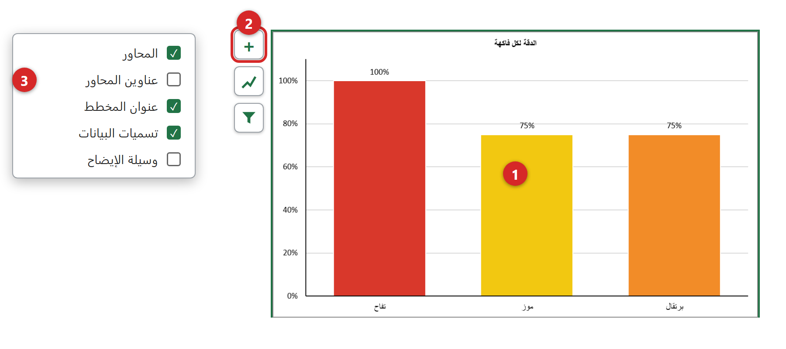
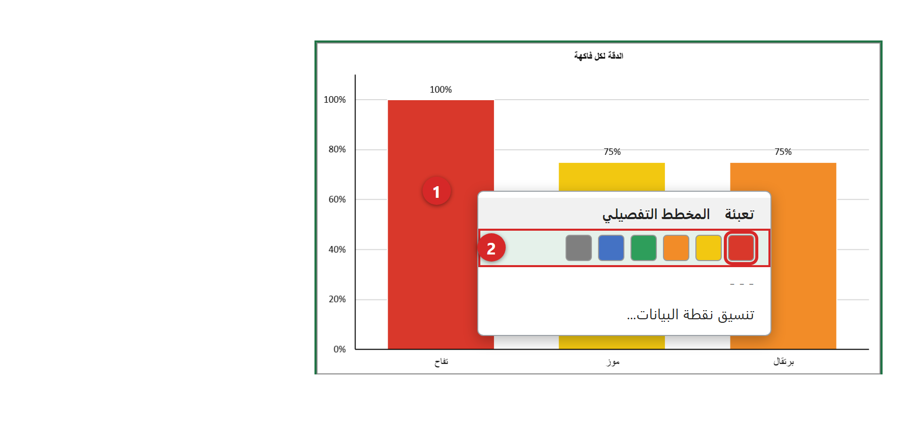
7لوحة نتائجكم
ضعوا المخططات الخمسة بجانب بعضها في الورقة (أو انسخوها إلى ورقة جديدة). اضغطوا Ctrl+S لحفظ الملف بصيغة .xlsx. ولوضع مخطط في Word أو PowerPoint: اضغطوا على المخطط ثم Ctrl+C، وفي الملف الآخر Ctrl+V.
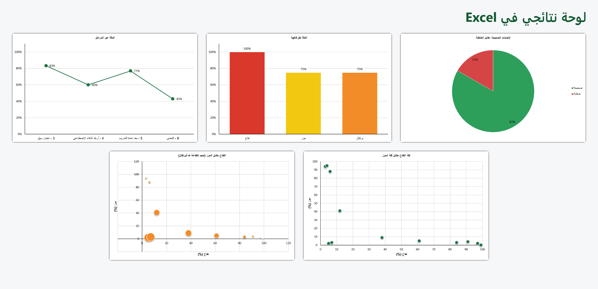
8فكّروا كعالِم بيانات
- ما دقة الذكاء الاصطناعي لديكم؟ أي فاكهة يعرفها أفضل وأي فاكهة يعرفها أقل؟
- انظروا إلى الصور ذات أقل ثقة: هل كانت إجاباتها صحيحة أم خاطئة؟ ماذا يوحي ذلك؟
- في الرسم المبعثر: أين تقع التفاحات والموزات والبرتقالات؟ وأين ستقع صورة تُربك الذكاء الاصطناعي؟
- في الرسم الخطي: ماذا تغيّر بعد إعادة التدريب؟ ولماذا برأيكم؟
- في الرسم الفقاعي: ماذا تعني الفقاعات الكبيرة؟
- لو استطعتم أن تعرضوا على مديركم رسمًا واحدًا فقط، فأي رسم تختارون ولماذا؟
اكتبوا إجاباتكم في ملف EXCEL_RESULTS.
⭐ تحديات لمن ينتهي مبكرًا
- أنشئوا مخططًا عموديًا يقارن نسب التفاح والموز والبرتقال لأول 6 صور (حدّدوا A1:A7 ثم اضغطوا باستمرار على Ctrl وحدّدوا C1:E7).
- رتّبوا الجدول حسب الثقة: تبويب بيانات ← فرز. ابحثوا عن 3 صور بأقل ثقة.
- لوّنوا بالأحمر كل ثقة أقل من 60: الصفحة الرئيسية ← تنسيق شرطي ← قواعد تمييز الخلايا ← أقل من…
كلمات بثلاث لغات
| English | العربية | עברית |
|---|---|---|
| Cell | خلية | תא |
| Row | صف | שורה |
| Column | عمود | עמודה |
| Formula | صيغة | נוסחה |
| Formula bar | شريط الصيغة | שורת הנוסחאות |
| Sheet | ورقة عمل | גליון עבודה |
| Home (tab) | الصفحة الرئيسية | בית |
| Insert (tab) | إدراج | הוספה |
| Chart | مخطط | תרשים |
| Pie chart | مخطط دائري | תרשים עוגה |
| Column chart | مخطط عمودي | תרשים עמודות |
| Line chart | مخطط خطي | תרשים קווי |
| Scatter chart (XY) | مخطط مبعثر (XY) | תרשים פיזור (XY) |
| Bubble chart | مخطط فقاعي | תרשים בועות |
| Chart title | عنوان المخطط | כותרת תרשים |
| Axis titles | عناوين المحاور | כותרות צירים |
| Data labels | تسميات البيانات | תוויות נתונים |
| Legend | وسيلة الإيضاح | מקרא |
| Fill handle | مقبض التعبئة | ידית מילוי |
| Percent Style | نمط النسبة المئوية | סגנון אחוזים |
| Accuracy | الدقة | דיוק |
| Confidence | الثقة | ביטחון |
| Undo | تراجع | ביטול פעולה |
| Save | حفظ | שמירה |
هل حدث خطأ؟
أرى ##### في الخلية
العمود ضيق جدًا. اضغطوا مرتين على الخط الفاصل بين حرفي عمودين.
الصيغة تظهر كنص ولا تُحسب
تأكدوا أنها تبدأ بـ = وأن تنسيق الخلية «عام» وليس «نص».
يظهر #NAME?
اسم دالة مكتوب بشكل خاطئ. تأكدوا من الإملاء (بالإنجليزية).
يظهر خطأ بسبب الفاصلة
بعض الأجهزة تستخدم الفاصلة المنقوطة ; بدل الفاصلة ,
المخطط فارغ أو يبدو غريبًا
حدّدوا الخلايا الصحيحة أولًا ثم أدرجوا المخطط. يمكنكم دائمًا التراجع بـ Ctrl+Z.
يظهر الرقم 0.83 بدل 83%
حدّدوا الخلية واضغطوا زر % في تبويب الصفحة الرئيسية.